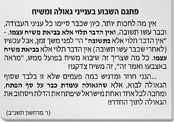

מאב-רם לאברהם
עד אברם הייתה בעולם “שבירת הכלים” שבאה לידי ביטוי בדור המבול. אולם מאברם מתחיל “עולם התיקון”. וזהו תוכן פנימיות עניין הציווי לאברם – “לך לך”, לאמור: יציאת שם מ”ה (השם המתקן ומברר) אשר לצורך העלאת העולם וגילוי פנימיות אב – רם, צריכה להיות ירידה אחר ירידה, מאב-רם – בחינת פנימיות החכמה – עד “אל הארץ”,

כ”ק אדמו”ר הזקן: עד אברם הייתה בעולם “שבירת הכלים” שבאה לידי ביטוי בדור המבול. אולם מאברם מתחיל “עולם התיקון”. וזהו תוכן פנימיות עניין הציווי לאברם – “לך לך”, לאמור: יציאת שם מ”ה (השם המתקן ומברר) אשר לצורך העלאת העולם וגילוי פנימיות אב – רם, צריכה להיות ירידה אחר ירידה, מאב-רם – בחינת פנימיות החכמה – עד “אל הארץ”, ש”ארץ” היא בחינת מלכות.
ועל ידי עבודה זו נעשה “אשר אראך” – שהקב”ה אומר: אראה ואגלה אותך בעצמך, כלומר שאתה תבוא לידי התגלות, מכוחה של מצות מילה, “והיה שמך אברהם – אב המון גויים”.
(תורה אור, פרשת לך לך יא, ב)
אור עליון מעצמות המאציל
כ”ק אדמו”ר האמצעי: גם בשביל קיום התורה והמצוות ברוחניות ציוה ה’ את אברהם “לך לך” וגו’. שתוכנו של ציווי זה הוא שיומשך אור עליון מעצמות המאציל מהעלם לגילוי, למעלה מכפי המידה והצמצום הראשון, דהשתלשלות הקדומה.
(תורת חיים פרשת לך לך פז, ד)
לך לך – ואעשך לגוי גדול
כ”ק אדמו”ר הצמח צדק: השכר על “לך לך מארצך” וגו’ הינו: “ואעשך לגוי גדול”. כי הנה על ידי מי היא ההשפלה והירידה כזאת, של בחינת שמו הגדול, שתהא ממנה התפשטות אור אין סוף למטה מטה עד אין תכלית? – דבר זה נפעל על ידי “גוי גדול”, כמו שכתוב באברהם אבינו – “ואעשך לגוי גדול”, שנאמר בו באברהם – “כי מי גוי גדול” – אני מעמיד ממך”.
ולפיכך נקראו ישראל “גוי גדול” – לפי שמקבלים מבחינת “שמו הגדול”, וכמו שכתוב: “וקרבתנו מלכנו לשמך הגדול”.
(אור התורה, במדבר כרך ד, הוספות, עמ’ טז)
לך לך לשרש נשמתך
כ”ק אדמו”ר מהר”ש: ידוע שישנו שרש הנשמה שלמעלה מהתלבשות בגוף. וזהו שנאמר באברהם “לך לך”, לאמור: שיבוא אברהם לבחינת שרש נשמת אברהם (“לך לך”).
זהו שנאמר “אל הארץ אשר אראך”, שכן אמרו חז”ל במדרש רבה על הפסוק “תוצא הארץ נפש חיה” – “זה רוחו של אדם הראשון” או “רוחו של משיח”, שכן אד”ם בראשי תבות: “והתפללו אליך דרך ארצם. כלומר, שמכיון אשר הארץ היא בחינת ביטול, וגם ש”ארץ” לשון “רצוא”, שעל ידי הרצוא לאלוקות מתוך ביטול, בבחינת ארץ, זוכה להגיע למעלת לך לך … אשר אראך”.
(תורת שמואל תרכ”ז עמ’ יד)
לך לך: טעם כפילות האותיות
כ”ק אדמו”ר מהורש”ב: איתא בילקוט שמעוני: “חמש אותיות כפולות הן (חמש אותיות מנצפ”ך) וכולן לשון גאולה. וצריך להבין טעם הכפל לך – לך, ובכלל, מהו עניין הכפל של האותיות, אשר היותן כפולות מורה על הגאולה?
אלא שעניין הכפילות מורה על ייחוד שתי הבחינות סובב כל עלמין וממלא כל עלמין. שעל ידי גילוי סובב כל עלמין בממלא כל עלמין, הנה על ידי זה היא הגאולה.
וזהו שדווקא אברהם פעל זאת על ידי עבודתו בייחוד “סובב” ב”ממלא”, כדברי ה”מדרש רבה”: “אמר לו הקב”ה לאברהם: טלטל עצמך ממקום למקום ושמך מתגדל”. שכן אברהם אבינו המשיך את גילוי “אור הבלי גבול” – ב”גבול” – בתוך גדרי העולם, וכך פעל גילוי אור גם בעולם הגשמי.
(המשך תער”ב ח”ב עמ’ א’קצה)
עבודה בכח עצמו
כ”ק אדמו”ר מוהריי”צ: כל עניין העבודה הוא, שיהיה בכח עצמו וביגיעתו של האדם. כך נאמר על אברהם אבינו בתחילת קרובו לה’, – “לך לך מארצך ממולדתך ומבית אביך”. שכן תכלית הכל היא לעלות ולהגיע בהילוך אחר הילוך לבחינת ומדרגת “לך” שהיא עצם ושרש הנשמה. אולם אופן הילוך זה והתחלתו הוא “מארצך”, דהיינו לצאת מהארציות והגשמיות. “וממולדתך” – שהוא עניין עזיבת הרגילות מה שהרגילה הנפש הבהמית את האדם. ו”מבית אביך” – שהוא השכל הטבעי, אשר כל השכלותיו המה בעניינים גופניים ובדברים הגשמיים, ואז יעלה האדם ויגיע “אל הארץ” – שהוא הרצון האמיתי, שכל זה הינה עבודה ויגיעה גדולה של האדם.
(ספר המאמרים תרצ”ב. עמ’ רנג)
להתחיל מכח המעשה
כ”ק אדמו”ר מלך המשיח שליט”א: אחד הפירושים ב”לך לך… אל הארץ וגו’ הוא כפשטות הכתוב שהליכה זו היא מלמטה למעלה. שהרי ההליכה היא מארצך ממולדתך ומבית אביך שהיא כפשטות הכתוב, ארצו של תרח. זאת כדרשת חז”ל על הפסוק: “מי יתן טהור מטמא… כגון אברהם מתרח”, שזו הדרגא התחתונה ביותר. ברם משם ילך ויעלה מלמטה למעלה, עד “אל הארץ אשר אראך” – שהארץ מורה על ספירת המלכות, ועולה מעלה – מעלה עד לבחינות הנעלות ביותר, למעלה מסדר ההשתלשלות.
כך הוא גם בעבודת האדם: יש להתחיל מהכוח הנמוך ביותר, כח המעשה, ומשם מתחילה הליכתו מלמטה למעלה. והנה, על ידי שכך היה אצל אברהם אבינו, ניתן הכח לעבודה זו, לכל אחד ואחד מישראל.
(ממאמר ד”ה “ויאמר ה’… לך לך”, מוצאי ש”ק פ’ לך-לך ה’תשל”ח)